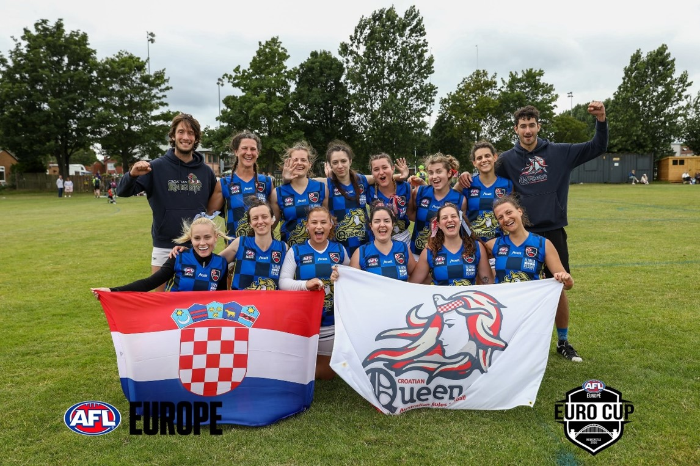
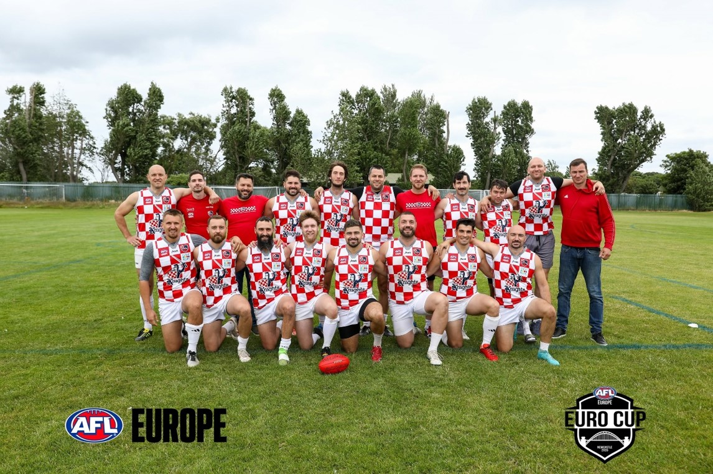
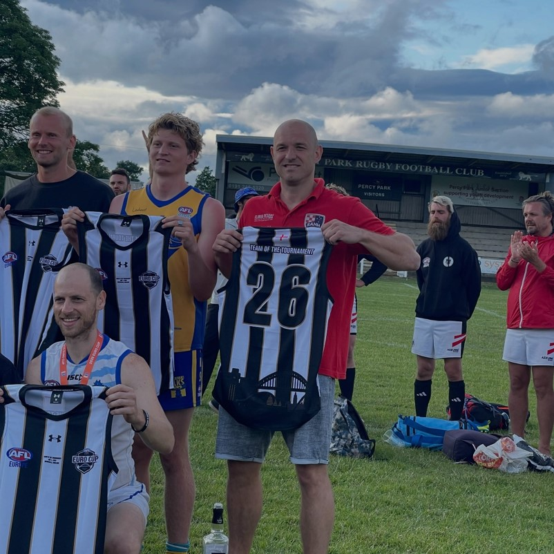
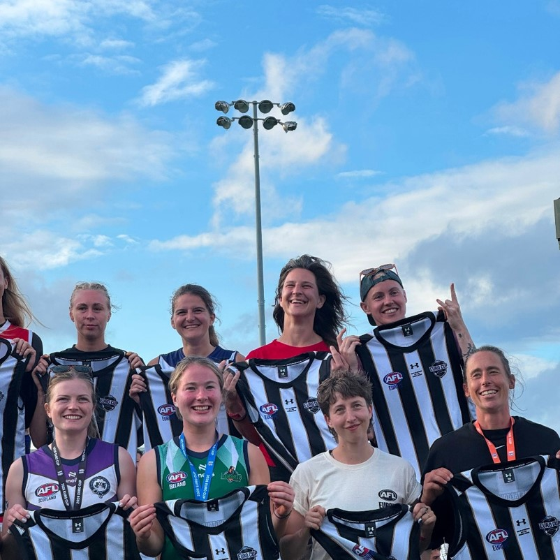

Nakon Eurocupa 2026: rezultati Knightsa i Queensica
Dok se muška reprezentacija priprema za veliki put u Adelaide, a Queensice za put u Beč – gdje ih čeka prijateljska utakmica protiv ekipa s kojima su prošle godine igrale prvi ženski međunarodni turnir australskog nogometa u Zagrebu i osvojile prvo mjesto – vrijedi se još jednom osvrnuti na ono što je ova generacija ostvarila na Eurocupu 2026 – posebno na sjajan uspjeh naših Queensica, koje su turnir završile na odličnom 6. mjestu.
Croatian Queens (žene) — 6. mjesto
| Protivnik | Rezultat | Ishod |
|---|---|---|
| Škotska | 49 : 0 | Poraz |
| Irska | 41 : 1 | Poraz |
| Poljska | 1 : 21 | Pobjeda |
| All Stars | 13 : 15 | Pobjeda |
| Švicarska | 1 : 20 | Pobjeda |
| Švedska | 19 : 7 | Poraz |
Croatian Queens je momčad koja iz utakmice u utakmicu sve više raste, o čemu svjedoče i tri uvjerljive pobjede u drugom dijelu turnira. Uz neka stara i dosta novih lica, Queensice su ostvarile odličan uspjeh i nakon napornih šest utakmica u jednom danu ostale šeste od ukupno 10 ekipa.
Reprezentaciji se pridružila i Anđelika Opačak, igračica hrvatskih korijena iz kluba Sussex Swans, koja se odlučila pridružiti i zaigrati za žensku reprezentaciju na ovogodišnjoj europskoj smotri. Ovim putem joj se zahvaljujemo i vjerujemo da ovo nije bio njezin posljednji nastup u hrvatskom dresu.

Slika 1: Croatian Queens na Euro Cupu (Newcastle, UK)
Croatian Knights (muškarci) — 10. mjesto
| Protivnik | Rezultat | Ishod |
|---|---|---|
| Nizozemska | 34 : 16 | Poraz |
| Poljska | 0 : 78 | Pobjeda |
| Wales | 32 : 29 | Poraz |
| Švedska | 22 : 25 | Pobjeda |
| Njemačka | 28 : 6 | Poraz |
Muška reprezentacija je ostvarila tek 10. mjesto – u borbi za 9. mjesto izgubila je od uvijek neugodne Njemačke. U tvrdoj borbi protiv Walesa, u kojoj su nas od prolaska u polufinale dijelile tek sekunde, ipak je presudilo iskustvo, a pobjedu je odnijela ekipa Walesa. Da ne bude sve tako crno, muška reprezentacija također ima i pomladak kojem su ovo tek prvi europski nastupi.

Slika 2: Croatian Knights, momčadska fotografija s Eurocupa 2026.
Team of the Tournament
Posebna čestitka Tomislavu Cvetku (Knights) i Anđeliki Opačak (Queensice), koji su uvršteni u Team of the Tournament – priznanje koje govori samo za sebe o kvaliteti i predanosti koju su pokazali kroz cijeli turnir.

Slika 3: Tomislav Cvetko (gornji red, prvi zdesna) – "Team of the Tournament", muški

Slika 4: Anđelika Opačak (gornji red, druga zdesna) – "Team of the Tournament", žene
Zahvala
Hvala svim igračima i stožeru, i muškom i ženskom dijelu, koji su ovaj turnir pretvorili u temelj za sve što dolazi. Adelaide i Sesvete su sljedeći koraci.
Posebna zahvala i našim sponzorima — Aceitu na novoj garnituri dresova te Iliriji Resortu na kontinuiranoj podršci. Bez njih ovi uspjesi ne bi bili mogući.